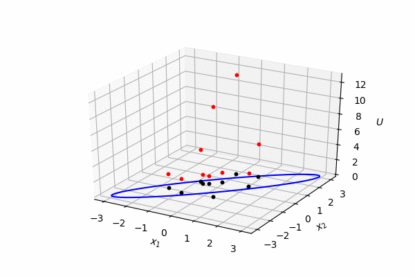

同时运行多个仿真是多粒子仿真的第一步，相当于每个粒子单独仿真，粒子之间没有碰撞，而且每个例子的总能量不同，且相对固定。 以下为50个粒子的仿真，利用数值计算库，其仿真速度与单粒子几乎一样快。
]]
多个仿真与单一的哈密顿仿真非常类似：能量函数返回多个能量值而不是标量，梯度返回矩阵而不是向量。 因此需要将矩阵内积改为相乘再相加来实现。
势能
def U(x): """ Potential energy """ return np.sum(x * np.linalg.solve(SIGMA,x), axis = 0)/2 def dU(x): return np.linalg.solve(SIGMA, x)
动能
def K(p): """ Kinematic energy """ return np.sum(p*p, axis=0)/2 def dK(p): """ Kinematic energy """ return p
初始化
POINTS = 50 xStar = np.random.randn(2, POINTS) pStar = np.random.randn(2, POINTS)